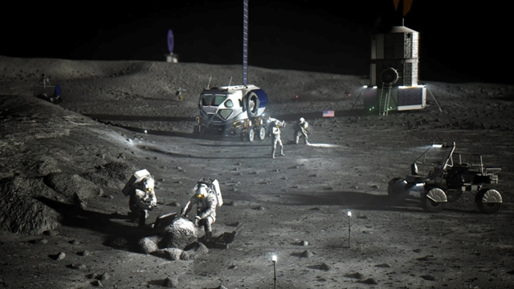

A 4G hálózat
Az információtechnológia 4G-vel a negyedik generációs vezeték nélküli szolgáltatásokat jelöli.
Története
- Az első 4G technológiát építő távközlési vállalat a brit Truphone volt,
- az új hálózatnak köszönhetően a telekommunikáció az addiginál olcsóbbá válhatott,
- az adatátvitel a SIP szabvány szerint működik,
- a 4G-s mobiltelefont a gyorsabb és üzembiztosabb szélessáv, HD minőségben streamelt videók lejátszhatósága jellemzi,
- Magyarországon 2011 őszén indította el először a Magyar Telekom Budapest egy részén kísérleti jelleggel az LTE szolgáltatását.
Internet a Holdon
Nokia a Holdon
A Földön működő LTE-s hálózatok alkalmasak nagyfelbontású videós tartalmak sugárzásához (így például videochatre) is, hiszen jóval gyorsabb adatátvitelű technológiáról van szó. Hogy a Holdon létesítendő megoldás is használható lesz-e ilyesmire, egyelőre nem tudni, a kapcsolat technikai részleteiről (úgymint a sebesség) nem osztottak meg részleteket.
A holdi internethez azért választották a 4G-s technológiát, mert azt könnyebb kiépíteni, szemben például a bonyolultabb 5G-vel.
A Nokiának ez a második holdi internetprojektje: 2018-ban a Vodafone-nal és a német PTScientists csoporttal együtt belevágott egy kísérletbe, hogy az égitesten létesített LTE-hálózattal sugározzon nagyfelbontású videókat a Holdról, de ez végül nem tudott megvalósulni.
Nokia űrszonda
A NASA mérnökei kitalálták, hogyan lehetne a majdani Hold-bázis teljes területén wifi-hálózaton kommunikálni.
Az Artemis-programmal vetné meg a lábát a Holdon az Egyesült Államok: az asztronauták hosszabb ideig az égitest felszínén élnének és dolgoznának. Ennek egyik alapfeltétele – persze a Hold-bázis mellett – egy zökkenőmentesen működő kommunikációs hálózat. A NASA korábban már jelezte, a Nokiával közösen 4G LTE hálózatot hozna létre ott, most pedig már a wifi kiépítését tervezgeti.
A szervezet clevelandi kutatóközpontja azt vizsgálta, hogy az kandeláberket miként lehetne úgy átalakítani, hogy azok szélessávú internetelérést biztosítsanak. A számítások alapján Cleveland egyik városrészében – ami nagyjából akkora, mint amekkora a Hold-bázis lesz – mintegy 20 ezer lámpaoszlopot kellene routerré alakítani. Ennek köszönhetően, ha legfeljebb 100 méterenként van egy ilyen kandeláber, akkor egy négyfős háztartásnak egy ilyen lámpaoszlop körülbelül 7,5 Mbps letöltési sebességet biztosíthat.
A NASA ezek alapján úgy látja, érdemes lenne egy ilyen módszerrel megoldani a Holdon is a kérdést. Erre a tervek szerint az évtized végéig sor kerül.